| S. NO. | COVER TYPE | NAME OF THE COVER | DATE OF ISSUE | LOCATION | STATE | PINCODE | IMAGE |
|---|
| 1 | First Day Cover | Thiruvalluvar | 15.02.1960 | Calcutta | West Bengal | 700001 | |
| 2 | First Day Cover | Kalidasa | 22.06.1960 | Bombay | Maharashtra | 400001 | |
| 3 | First Day Cover | Combo: Dr. M. Visvesvaraya | 15.09.1960 | Madras | Tamil Nadu | 600002 | |
| 4 | First Day Cover | Tyagaraja Aradhana Day | 06.01.1961 | Bombay | Maharashtra | 400001 | |
| 5 | First Day Cover | Centenary of Archaeological Survey of India | 14.12.1961 | Nagpur | Maharashtra | 440001 |  |
| 6 | First Day Cover | Centenary of Archaeological Survey of India | 14.12.1961 | Madras | Tamil Nadu | 600002 | |
| 7 | First Day Cover | Dayanand Saraswati | 04.03.1962 | Bombay | Maharashtra | 400001 | |
| 8 | First Day Cover | Dr. Rajendra Prasad | 13.05.1962 | New Delhi | Delhi | 110001 |  |
| 9 | First Day Cover | Conserve Wildlife: Rhino | 01.10.1962 | Calcutta | West Bengal | 700001 | |
| 10 | First Day Cover | Swami Vivekananda | 17.01.1963 | Calcutta | West Bengal | 700001 | |
| 11 | First Day Cover | Annie Besant | 01.10.1963 | Bombay | Maharashtra | 400001 | |
| 12 | First Day Cover | Azad Hind Government 25th Anniversary | 21.10.1963 | Bombay | Maharashtra | 400001 | |
| 13 | First Day Cover | Purandaradasa | 14.01.1964 | Hyderabad | Andhra Pradesh | 500001 | |
| 14 | First Day Cover | Netaji Subhas Chandra Bose (A) | 23.01.1964 | Bombay | Maharashtra | 400001 | |
| 15 | First Day Cover | Netaji Subhas Chandra Bose (B) | 23.01.1964 | Bombay | Maharashtra | 400001 | |
| 16 | First Day Cover | Sri Aurobindo | 15.08.1964 | Bombay | Maharashtra | 400001 | |
| 17 | First Day Cover | Combo: Raja Rammohun Roy | 27.09.1964 | Hyderabad | Andhra Pradesh | 500001 | |
| 18 | First Day Cover | Jawahar Jyoti 1 | 27.05.1965 | Bombay | Maharashtra | 400001 | |
| 19 | First Day Cover | Jawahar Jyoti 2 | 27.05.1965 | Bombay | Maharashtra | 400001 | |
| 20 | First Day Cover | Vallabhbhai Patel | 31.10.1965 | Bombay | Maharashtra | 400001 | |
| 21 | First Day Cover | Vidyapati | 17.11.1965 | Bombay | Maharashtra | 400001 |  |
| 22 | First Day Cover | Combo: Pacific Area Travel Association | 24.01.1966 | Calcutta | West Bengal | 700001 | |
| 23 | First Day Cover | Kambar | 05.04.1966 | Bombay | Maharashtra | 400001 | |
| 24 | First Day Cover | Combo: Homi Bhabha | 04.08.1966 | New Delhi | Delhi | 110001 |  |
| 25 | First Day Cover | Swami Rama Tirtha | 11.11.1966 | Bombay | Maharashtra | 400001 |  |
| 26 | First Day Cover | International Tourist Year 1967 | 19.03.1967 | Bombay | Maharashtra | 400001 | |
| 27 | First Day Cover | Basaveshwara 8th Centenary Celebrations | 11.05.1967 | Allahabad | Uttar Pradesh | 211001 | |
| 28 | First Day Cover | Basaveswara | 11.05.1967 | Jaipur | Rajasthan | 302001 | |
| 29 | Blank First Day Cover | Maharana Pratap (1) | 11.06.1967 | none | none | none | |
| 30 | Blank First Day Cover | Maharana Pratap (2) | 11.06.1967 | none | none | none | |
| 31 | First Day Cover | Narayana Guru | 21.08.1967 | Bombay | Maharashtra | 400001 | |
| 32 | First Day Cover | II International Conference - Seminar of Tamil Studies | 03.01.1968 | Bombay | Maharashtra | 400001 | |
| 33 | First Day Cover | Bhagat Singh | 19.10.1968 | Hyderabad | Andhra Pradesh | 500001 | |
| 34 | First Day Cover | Man On The Moon | 19.11.1969 | Bombay | Maharashtra | 400001 | |
| 35 | First Day Cover | Gurunanak Dev | 23.11.1969 | New Delhi | Delhi | 110001 |  |
| 36 | First Day Cover | Sadhu Vaswani | 25.11.1969 | Bombay | Maharashtra | 400001 | |
| 37 | First Day Cover | Maharshi Valmiki | 14.10.1970 | Bombay | Maharashtra | 400001 | 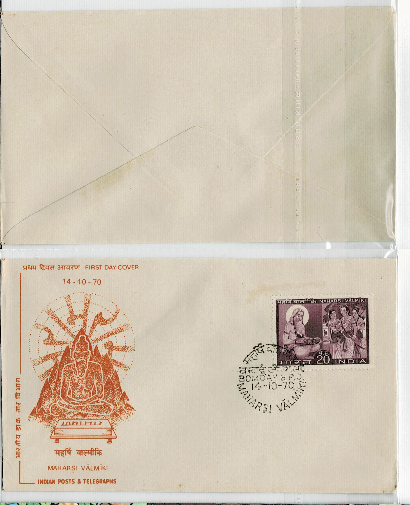 |
| 38 | First Day Cover | Sant Ravidas | 10.02.1971 | Madras | Tamil Nadu | 600002 | |
| 39 | First Day Cover | Sri Ramana Maharshi | 14.04.1971 | Bombay | Maharashtra | 400001 | |
| 40 | First Day Cover | Raja Ravi Varma | 29.04.1971 | New Delhi | Delhi | 110001 |  |
| 41 | First Day Cover | Combo: Raja Ravi Varma | 29.04.1971 | Hyderabad | Andhra Pradesh | 500001 | |
| 42 | First Day Cover | Dadasaheb Phalke | 30.04.1971 | Calcutta | West Bengal | 700001 | |
| 43 | First Day Cover | Swami Virajanand | 14.11.1971 | Madras | Tamil Nadu | 602002 | |
| 44 | First Day Cover | UNESCO-25th Anniversary | 04.11.1971 | Hyderabad | Andhra Pradesh | 500001 | |
| 45 | First Day Cover | Visva-Bharati Golden Jubilee | 24.12.1971 | Hyderabad | Andhra Pradesh | 500001 | |
| 46 | First Day Cover | Cricket Victories | 30.12.1971 | Hyderabad | Andhra Pradesh | 500001 | |
| 47 | First Day Cover | 25th Anniversary of Independence 1 | 15.08.1972 | Hyderabad | Andhra Pradesh | 500001 | |
| 48 | First Day Cover | Sri Aurobindo Birth Centenary | 15.08.1972 | Sri Aurobindo Ashram | Puducherry | 605002 |  |
| 49 | First Day Cover | 25th Anniversary of Independence 2 | 26.01.1973 | Hyderabad | Andhra Pradesh | 500001 | |
| 50 | First Day Cover | Sri Ramakrishna Paramahamsa | 18.02.1973 | Bombay | Maharashtra | 400001 | |
| 51 | First Day Cover | Indian Miniature Paintings: Radha-Kishangarh | 05.05.1973 | Bombay | Maharashtra | 400001 | |
| 52 | First Day Cover | INDIPEX 73: Children's Day feat. All Roads to Dehi Road | 14.11.1973 | New Delhi | Delhi | 110001 |  |
| 53 | First Day Cover | INDIPEX 73: Children's Day feat. Elephant | 14.11.1973 | Bombay | Maharashtra | 400001 | 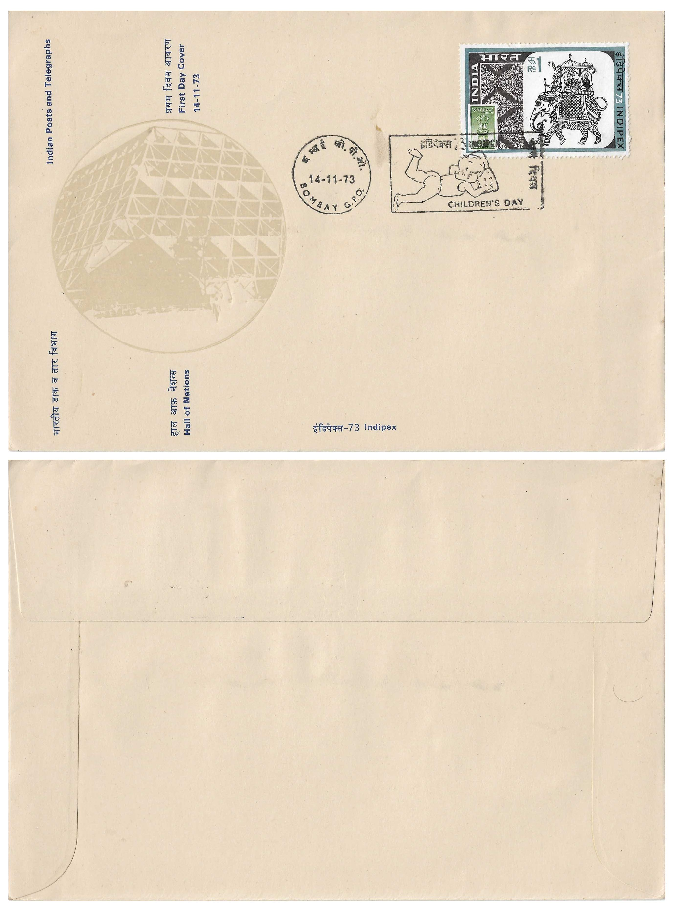 |
| 54 | First Day Cover | INDIPEX 73: Children's Day feat. Peacock | 14.11.1973 | Bombay | Maharashtra | 400001 | |
| 55 | First Day Cover | Indian Masks Series | 15.04.1974 | Bombay | Maharashtra | 400001 | |
| 56 | First Day Cover | 300th Anniversary of Coronation Chhatrapati Shri Shivaji Maharaj | 02.06.1974 | Hyderabad | Andhra Pradesh | 500001 | |
| 57 | First Day Cover | XIX International Dairy Congress | 02.12.1974 | Madras | Tamil Nadu | 600002 |  |
| 58 | First Day Cover | World Hindi Conference | 10.01.1975 | Hyderabad | Andhra Pradesh | 500001 | |
| 59 | First Day Cover | Conquest of Kanchenjunga | 15.01.1978 | Hyderabad | Andhra Pradesh | 500001 | |
| 60 | First Day Cover | 25th Anniversary of The Republic | 26.01.1975 | Hyderabad | Andhra Pradesh | 500001 | |
| 61 | First Day Cover | World Telugu Conference | 12.04.1975 | Hyderabad | Andhra Pradesh | 500001 | |
| 62 | First Day Cover | World Telugu Conference | 12.04.1975 | Bangalore | Karnataka | 560001 | |
| 63 | First Day Cover | Ram Charit Manas | 24.05.1975 | Hyderabad | Andhra Pradesh | 500001 | |
| 64 | First Day Cover | Ram Charit Manas | 24.05.1975 | Calcutta | West Bengal | 700001 | |
| 65 | First Day Cover | Saint Arunagirinathar | 14.08.1975 | Jaipur | Rajasthan | 302001 | 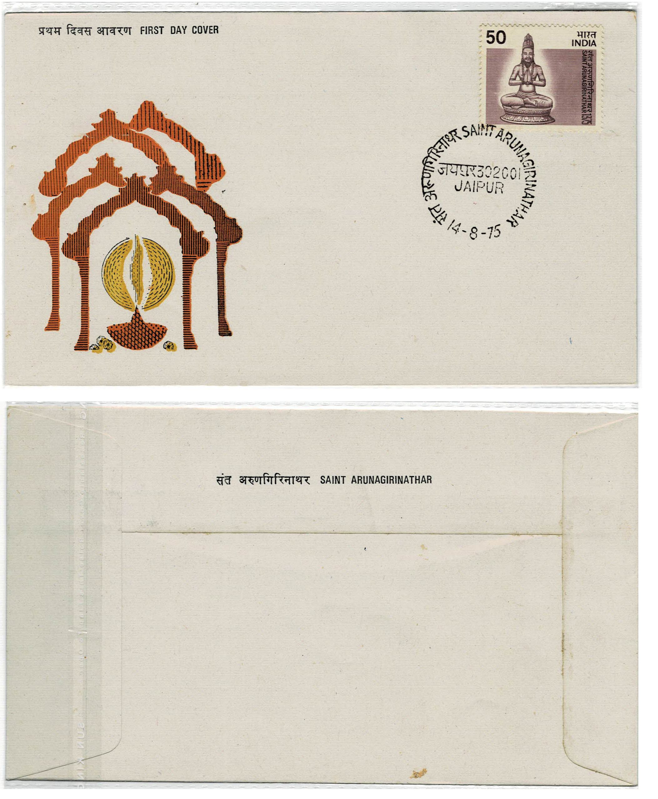 |
| 66 | First Day Cover | Indian Dances: Bharatanatyam | 20.10.1975 | Bombay | Maharashtra | 400001 | |
| 67 | First Day Cover | Theosophical Society Centenary | 20.12.1975 | Madras | Tamil Nadu | 600002 | |
| 68 | First Day Cover | Jim Corbett Centenary | 24.01.1976 | Bangalore | Karnataka | 560001 | |
| 69 | First Day Cover | Muthuswami Dikshitar | 18.03.1976 | Jaipur | Rajasthan | 302001 | |
| 70 | First Day Cover | Bhagawadgeeta | 25.08.1976 | Kurukshetra | Haryana | 136118 |  |
| 71 | First Day Cover | Paramahamsa Yogananda | 07.03.1977 | Bhopal | Madhya Pradesh | 462001 | |
| 72 | First Day Cover | Ananda Kentish | 22.08.1977 | Bombay | Maharashtra | 400001 | 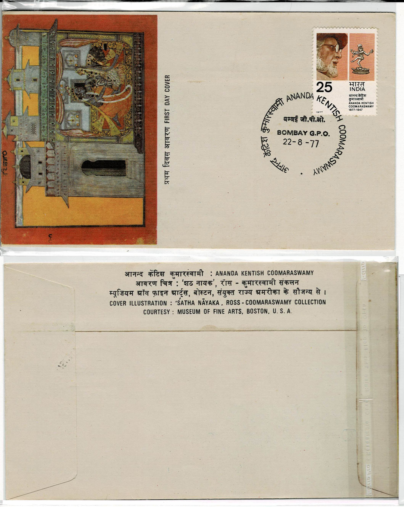 |
| 73 | First Day Cover | Museums of India: Indian Museum Calcutta | 27.07.1978 | Calcutta | West Bengal | 700001 | |
| 74 | First Day Cover | Sixth Definitive Series | 03.09.1979 | Bangalore | Karnataka | 560001 | 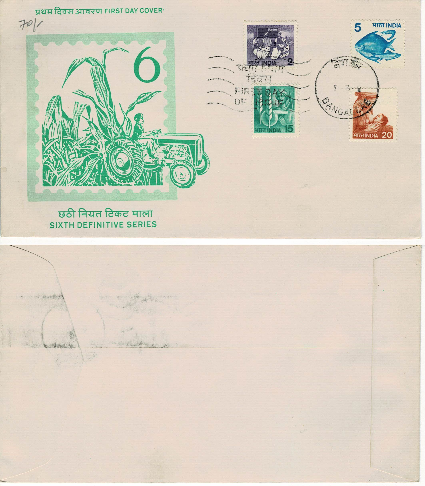 |
| 75 | First Day Cover | Chhatrapati Shivaji | 21.04.1980 | Kanpur | Maharashtra | 208001 | |
| 76 | First Day Cover | Chhatrapati Shivaji | 21.04.1980 | Bombay | Maharashtra | 400001 | |
| 77 | First Day Cover | Centenary of Kolar Gold Fields | 20.12.1980 | Bombay | Maharashtra | 400001 | |
| 78 | First Day Cover | Gommateshwara | 09.02.1981 | Bombay | Maharashtra | 400001 | |
| 79 | First Day Cover | Fifth World Cup Hockey | 29.12.1981 | Bombay | Maharashtra | 400001 | |
| 80 | First Day Cover | 125 Years Sir J. J. School of Art, Bombay | 02.03.1982 | Ludhiana | Punjab | 141001 | |
| 81 | First Day Cover | Troposcatter Communication Link: India-USSR | 02.11.1982 | Coimbatore | Tamil Nadu | 641001 | |
| 82 | First Day Cover | World Tourism Organization, Fifth General Assembly | 03.10.1983 | Bombay | Maharashtra | 400001 | |
| 83 | First Day Cover | The Asiatic Society | 15.01.1984 | Bombay | Maharashtra | 400001 | |
| 84 | First Day Cover | President's Review of the Fleet | 12.02.1984 | Bangalore | Karnataka | 560001 | |
| 85 | First Day Cover | Chaitanya Mahaprabhu | 13.03.1986 | Bangalore | Karnataka | 560001 | |
| 86 | First Day Cover | Mohammad Iqbal | 21.04.1988 | Bombay | Maharashtra | 400001 | |
| 87 | First Day Cover | India's Struggle For Freedom | 09.08.1988 | Bangalore | Karnataka | 560001 | |
| 88 | First Day Cover | India-89 World Philatelic Exhibition | 09.10.1988 | Bangalore | Karnataka | 560001 | |
| 89 | First Day Cover | State Museum, Lucknow, 125 Years | 11.01.1989 | Bangalore | Karnataka | 560001 |  |
| 90 | First Day Cover | Sankaracharya | 17.05.1989 | Bangalore | Karnataka | 560001 | |
| 91 | First Day Cover | Ahilyabai Holkar | 25.08.1996 | New Delhi | Delhi | 110001 |  |
| 92 | First Day Cover | Combo: Arya Samaj 1875-2000 | 05.04.2000 | New Delhi | Delhi | 110001 |  |
| 93 | First Day Cover | Bhagwan Mahavira 2600th Janm Kalyanak | 06.04.2001 | Chennai | Tamil Nadu | 600002 | |
| 94 | First Day Cover | Fryderyk Chopin | 04.05.2001 | New Delhi | Delhi | 110001 |  |
| 95 | First Day Cover | Jhalkari Bai | 22.07.2021 | New Delhi | Delhi | 110001 |  |
| 96 | First Day Cover | Temple Architecture | 22.12.2001 | Nashik | Maharashtra | 422001 | |
| 97 | First Day Cover | Swami Ramanand | 04.02.2002 | Ludhiana | Punjab | 141001 | |
| 98 | First Day Cover | Combo: Golden Jubilee: Parliament of India | 13.05.2002 | Pondicherry | Pondicherry | 605001 | |
| 99 | First Day Cover | Ananda Nilayam Vimanam, Tirumala | 11.10.2002 | New Delhi | Delhi | 110001 |  |
| 100 | First Day Cover | Gurukula Kangri Vishwavidyalaya, Hardwar | 24.12.2002 | New Delhi | Delhi | 110001 |  |
| 101 | First Day Cover | Dhirubhai H. Ambani | 28.12.2002 | Mumbai | Maharashtra | 400001 | |
| 102 | First Day Cover | Sant Eknath | 23.03.2003 | New Delhi | Delhi | 110001 |  |
| 103 | First Day Cover | Muktabai | 30.05.2003 | Mumbai | Maharashtra | 400001 | |
| 104 | First Day Cover | Janardan Swami | 24.09.2003 | Mumbai | Maharashtra | 400001 | |
| 105 | First Day Cover | K. Shivarama Karanth | 10.10.2003 | Kolkata | West Bengal | 700001 | |
| 106 | First Day Cover | Narendra Mohan | 14.10.2003 | Bangalore | Karnataka | 560001 | |
| 107 | First Day Cover | Mukut Behari Lal Bhargava | 18.12.2003 | Bangalore | Karnataka | 560001 | |
| 108 | Blank First Day Cover | Guru Granth Sahib | 16.06.2005 | none | none | none | |
| 109 | First Day Cover | Mehboob Khan | 30.03.2007 | Bangalore | Karnataka | 560001 | |
| 110 | First Day Cover | 53rd Commonwealth Parliamentary Conference | 23.09.2007 | Bangalore | Karnataka | 560001 | 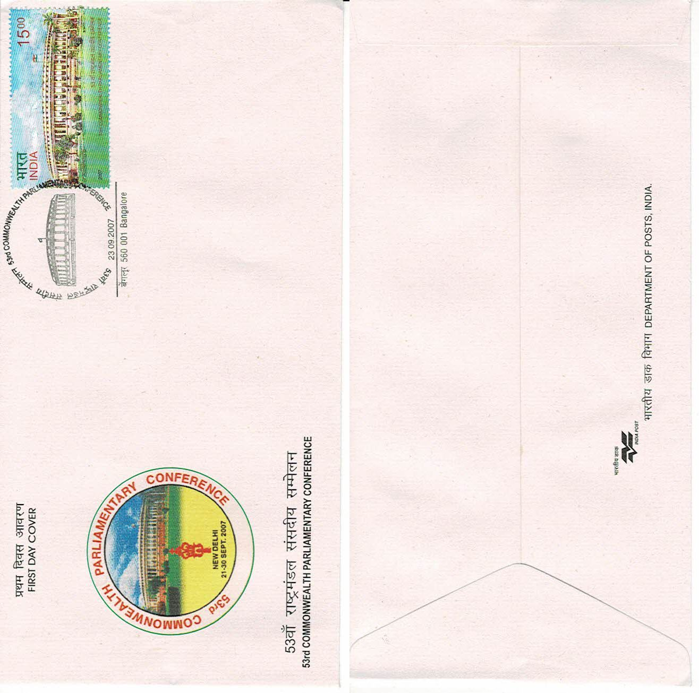 |
| 111 | First Day Cover | International Day of Disabled Persons | 03.12.2007 | Chennai | Tamil Nadu | 600002 | |
| 112 | First Day Cover | Shri Shirdi Sai Baba | 20.05.2008 | New Delhi | Delhi | 110001 |  |
| 113 | First Day Cover | Indian Institute of Science | 14.12.2008 | New Delhi | Delhi | 110001 |  |
| 114 | First Day Cover | R. K. Narayan | 10.10.2009 | Mangalore | Karnataka | 575001 | |
| 115 | First Day Cover | Jeanne Jugan: Little Sisters of The Poor | 29.10.2009 | New Delhi | Delhi | 110001 |  |
| 116 | First Day Cover | Indian Mathematical Society | 27.12.2009 | New Delhi | Delhi | 110001 |  |
| 117 | Blank First Day Cover | XIX Commonweath Ganmes: Queen's Baton Relay | 25.06.2010 | none | none | none | |
| 118 | First Day Cover | Brihadeeswarar Temple | 26.09.2010 | Thiruvananthapuram | Kerala | 695001 |  |
| 119 | Blank First Day Cover | Brihadeeswarar Temple | 26.09.2010 | none | none | none | |
| 120 | Blank First Day Cover | Immanuel Sekaranar | 09.10.2010 | none | none | none | |
| 121 | First Day Cover | T. N. Rajarathinam Pillai; Thanjavur Balasaraswathi; Veenai Dhanammal | 03.12.2010 | New Delhi | Delhi | 110001 |  |
| 122 | First Day Cover | India-Mexico Joint Issue | 15.12.2010 | Thiruvananthapuram | Kerala | 695001 | |
| 123 | First Day Cover | Krishnadevaraya | 27.01.2011 | New Delhi | Delhi | 110001 |  |
| 124 | First Day Cover | Ch. Ranbir Singh | 01.02.2011 | New Delhi | Delhi | 110001 |  |
| 125 | First Day Cover | Mary Ward - Loreto Institutions | 02.02.2011 | New Delhi | Delhi | 110001 |  |
| 126 | First Day Cover | Corps of Signals | 04.02.2011 | New Delhi | Delhi | 110001 |  |
| 127 | First Day Cover | V. Subbiah | 07.02.2011 | New Delhi | Delhi | 110001 |  |
| 128 | First Day Cover | V. Venkatasubba Reddiar | 11.02.2011 | New Delhi | Delhi | 110001 |  |
| 129 | First Day Cover | 175 Years of La Martiniere Schools | 01.03.2011 | New Delhi | Delhi | 110001 |  |
| 130 | First Day Cover | Subhadra Joshi | 23.03.2011 | New Delhi | Delhi | 110001 |  |
| 131 | First Day Cover | Chitralekha | 20.04.2011 | New Delhi | Delhi | 110001 |  |
| 132 | First Day Cover | Dr. D. S. Kothari | 06.07.2011 | New Delhi | Delhi | 110001 |  |
| 133 | First Day Cover | Vitthal Sakharam Page | 21.07.2011 | New Delhi | Delhi | 110001 |  |
| 134 | First Day Cover | Kasu Brahmananda Reddy | 28.07.2011 | New Delhi | Delhi | 110001 |  |
| 135 | First Day Cover | K. M. Mathew | 01.08.2011 | New Delhi | Delhi | 110001 |  |
| 136 | First Day Cover | Pt. K. Santanam | 25.08.2011 | New Delhi | Delhi | 110001 |  |
| 137 | First Day Cover | Surendra Nath Jauhar | 02.09.2011 | New Delhi | Delhi | 110001 |  |
| 138 | First Day Cover | Dev Narayan | 03.09.2011 | New Delhi | Delhi | 110001 |  |
| 139 | First Day Cover | Tejaji Maharaj | 07.09.2011 | New Delhi | Delhi | 110001 |  |
| 140 | First Day Cover | 250 Years: The Punjab Regiment & 1 Para (SF) (1 Punjab) | 12.10.2011 | New Delhi | Delhi | 110001 |  |
| 141 | First Day Cover | Kavi Pradeep | 11.12.2011 | New Delhi | Delhi | 110001 |  |
| 142 | First Day Cover | KGMC/CSMMU, Lucknow, Academic Centenary Year | 23.12.2011 | New Delhi | Delhi | 110001 |  |
| 143 | First Day Cover | Puran Chandra Gupta | 02.01.2012 | New Delhi | Delhi | 110001 |  |
| 144 | First Day Cover | Bhai Jagta Ji | 15.01.2012 | New Delhi | Delhi | 110001 |  |
| 145 | First Day Cover | Shyam Narayan Singh | 24.01.2012 | New Delhi | Delhi | 110001 |  |
| 146 | First Day Cover | India International Centre | 09.02.2012 | Bangalore | Karnataka | 560001 | |
| 147 | First Day Cover | Vasantdada Patil | 01.03.2012 | New Delhi | Delhi | 110001 |  |
| 148 | First Day Cover | Shyama Charan Shukla | 09.03.2012 | New Delhi | Delhi | 110001 |  |
| 149 | First Day Cover | Godiji Temple, Mumbai | 17.04.2012 | New Delhi | Delhi | 110001 |  |
| 150 | First Day Cover | Employees' State Insurance Corporation | 24.04.2012 | New Delhi | Delhi | 110001 |  |
| 151 | First Day Cover | Karpoor Chandra 'Kulish' | 16.05.2012 | New Delhi | Delhi | 110001 |  |
| 152 | First Day Cover | M. B. Kadadi | 17.05.2012 | New Delhi | Delhi | 110001 |  |
| 153 | First Day Cover | 800th Urs, Dargah Sharif, Ajmer | 27.05.2012 | Bhopal | Madhya Pradesh | 462001 | |
| 154 | First Day Cover | 50 Years of Customs Act, 1962 | 26.07.2012 | New Delhi | Delhi | 110001 |  |
| 155 | First Day Cover | Durga Prasad Chaudhary | 31.07.2012 | New Delhi | Delhi | 110001 |  |
| 156 | First Day Cover | 50 Years: Armed Forces Medical College, Pune | 04.08.2012 | New Delhi | Delhi | 110001 |  |
| 157 | First Day Cover | Husain Ahmad Madani | 29.08.2012 | New Delhi | Delhi | 110001 |  |
| 158 | First Day Cover | Motilal Nehru | 25.09.2012 | New Delhi | Delhi | 110001 |  |
| 159 | First Day Cover | Indo-Tibetan Border Police Force | 01.10.2012 | New Delhi | Delhi | 110001 |  |
| 160 | First Day Cover | Airborne Warning and Control System | 08.10.2012 | New Delhi | Delhi | 110001 |  |
| 161 | First Day Cover | XI Convention of Parties Convention on Biological Diversity Hyderabad India 2012: Endemic Species of Indian Biodiversity Hotspots | 16.10.2012 | New Delhi | Delhi | 110001 |  |
| 162 | First Day Cover | India-Israel Joint Issue: Festival of Lights-Deepawali-Hanukkah | 05.11.2012 | New Delhi | Delhi | 110001 |  |
| 163 | First Day Cover | T. S. Narayanaswami | 11.11.2012 | New Delhi | Delhi | 110001 |  |
| 164 | First Day Cover | Children's Day | 14.11.2012 | New Delhi | Delhi | 110001 |  |
| 165 | First Day Cover | The Scinde Horse | 16.11.2012 | New Delhi | Delhi | 110001 |  |
| 166 | First Day Cover | Ramgopal Maheshwari | 20.11.2012 | New Delhi | Delhi | 110001 |  |
| 167 | First Day Cover | Consumer Protection Act, 1986 | 29.11.2012 | New Delhi | Delhi | 110001 |  |
| 168 | First Day Cover | Combo: National Mathematics Day | 22.12.2012 | Mumbai | Maharashtra | 400001 | |
| 169 | First Day Cover | National Mathematics Day | 22.12.2012 | Mumbai | Maharashtra | 400001 | |
| 170 | First Day Cover | 100 Years of Indian Science Congress | 03.01.2013 | New Delhi | Delhi | 110001 |  |
| 171 | First Day Cover | Postgraduate Institute of Medica Education and Research, Chandigarh | 07.01.2013 | New Delhi | Delhi | 110001 |  |
| 172 | First Day Cover | 125 Years Uttar Pradesh Legislature | 08.01.2013 | New Delhi | Delhi | 110001 |  |
| 173 | First Day Cover | Ghadar Movement Centenary | 08.01.2013 | New Delhi | Delhi | 110001 |  |
| 174 | First Day Cover | Silk Letter Movement | 11.01.2013 | New Delhi | Delhi | 110001 |  |
| 175 | First Day Cover | 150th Birth Anniversary of Swami Vivekananda | 12.01.2013 | New Delhi | Delhi | 110001 |  |
| 176 | First Day Cover | 150th Birth Anniversary of Swami Vivekananda | 12.01.2013 | Thiruvananthapuram | Kerala | 695001 | 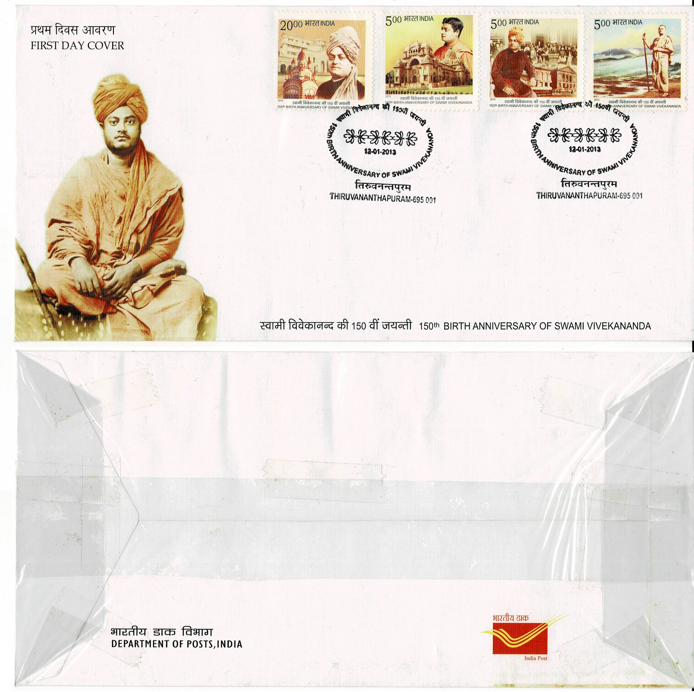 |
| 177 | First Day Cover | C. Achyuta Menon | 13.01.2013 | Bangalore | Karnataka | 560001 | |
| 178 | First Day Cover | Aditya Vikram Birla | 14.01.2013 | New Delhi | Delhi | 110001 |  |
| 179 | First Day Cover | Shrine Basilica, Vailankanni | 22.01.2013 | New Delhi | Delhi | 110001 |  |
| 180 | First Day Cover | 3 Para (Special Forces) | 02.03.2013 | New Delhi | Delhi | 110001 |  |
| 181 | First Day Cover | Officers Training Academy, Chennai Golden Jubilee | 07.03.2013 | New Delhi | Delhi | 110001 |  |
| 182 | First Day Cover | Sahir Ludhianvi | 08.03.2013 | New Delhi | Delhi | 110001 |  |
| 183 | First Day Cover | 125 Years Malayala Manorama | 16.03.2013 | New Delhi | Delhi | 110001 |  |
| 184 | First Day Cover | Jhulelal Sahib | 17.03.2013 | New Delhi | Delhi | 110001 |  |
| 185 | First Day Cover | Shiv Ram Hari Rajguru | 22.03.2013 | New Delhi | Delhi | 110001 |  |
| 186 | First Day Cover | Architectural Heritage of India | 11.04.2013 | New Delhi | Delhi | 110001 |  |
| 187 | First Day Cover | Architectural Heritage of India | 11.04.2013 | Thiruvananthapuram | Kerala | 695001 | 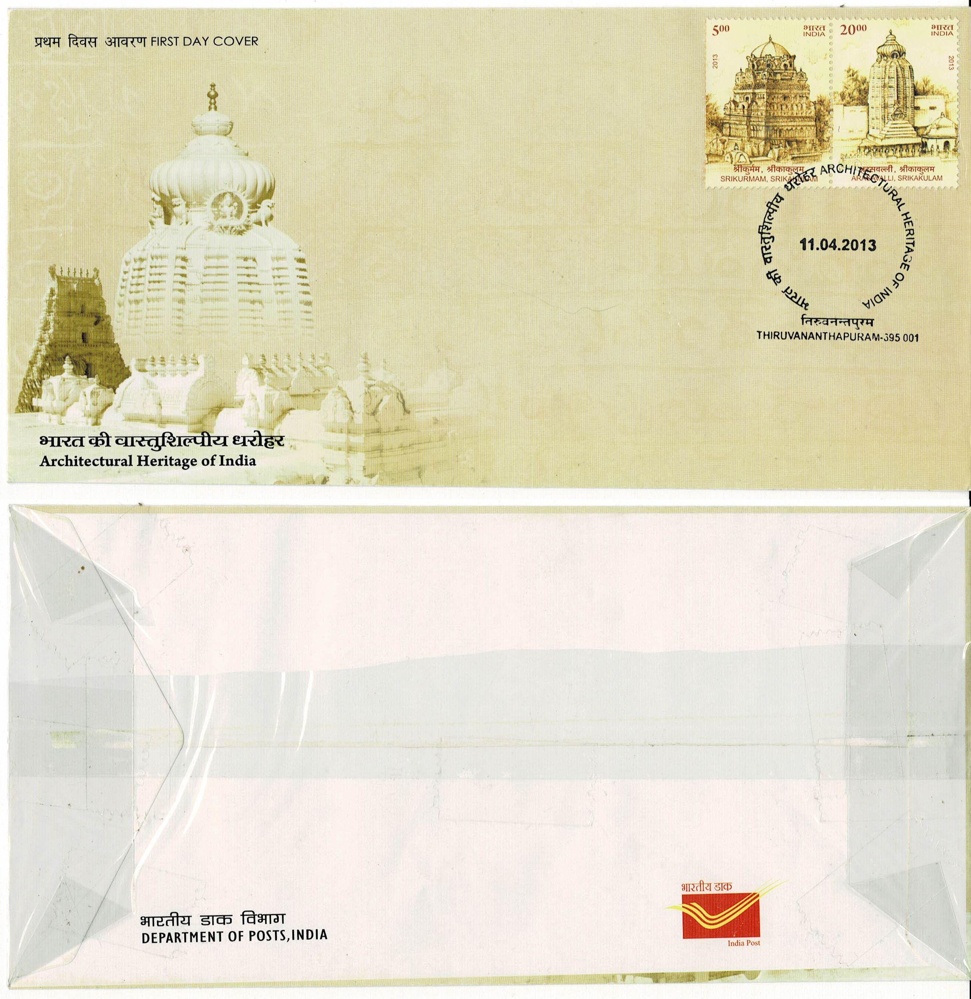 |
| 188 | First Day Cover | Heritage Buildings | 12.04.2013 | New Delhi | Delhi | 110001 |  |
| 189 | First Day Cover | Chaitya Bhoomi, Mumbai | 14.04.2013 | New Delhi | Delhi | 110001 |  |
| 190 | First Day Cover | Hari Singh Nalwa | 30.04.2013 | Bangalore | Karnataka | 560001 | |
| 191 | First Day Cover | Kiang: Ladakh and Ghor Khar: Kutch | 10.05.2013 | New Delhi | Delhi | 110001 |  |
| 192 | First Day Cover | Kiang: Ladakh and Ghor Khar: Kutch | 10.05.2013 | Bangalore | Karnataka | 560001 | |
| 193 | First Day Cover | 25 Years: Securities and Exchange Board of India | 24.05.2013 | New Delhi | Delhi | 110001 |  |
| 194 | First Day Cover | Peerzada Ghulam Ahmad Mehjoor | 25.06.2013 | New Delhi | Delhi | 110001 |  |
| 195 | First Day Cover | 100 Years: Delhi Gymkhana Club | 03.07.2013 | New Delhi | Delhi | 110001 |  |
| 196 | First Day Cover | Raj Bahadur | 21.08.2013 | New Delhi | Delhi | 110001 |  |
| 197 | First Day Cover | Lala Jagat Narain | 09.09.2013 | New Delhi | Delhi | 110001 |  |
| 198 | First Day Cover | Acharya Gyansagar | 10.09.2013 | New Delhi | Delhi | 110001 |  |
| 199 | First Day Cover | Gurajada Venkata Apparao | 21.09.2013 | New Delhi | Delhi | 110001 |  |
| 200 | First Day Cover | Pratap Narayan Mishra | 24.09.2013 | New Delhi | Delhi | 110001 |  |
| 201 | First Day Cover | Joomdev | 30.09.2013 | New Delhi | Delhi | 110001 |  |
| 202 | First Day Cover | Bhakra Dam | 22.10.2013 | New Delhi | Delhi | 110001 |  |
| 203 | First Day Cover | Ruchi Ram Sahni | 24.10.2013 | New Delhi | Delhi | 110001 |  |
| 204 | First Day Cover | Boys High School, Allahabad | 05.11.2013 | New Delhi | Delhi | 110001 |  |
| 205 | First Day Cover | Bharati Vidya Bhavan | 07.11.2013 | New Delhi | Delhi | 110001 |  |
| 206 | First Day Cover | Indian Academy of Pediatrics | 08.11.2013 | New Delhi | Delhi | 110001 |  |
| 207 | First Day Cover | 50 Years Central Bureau of Investigation | 11.11.2013 | New Delhi | Delhi | 110001 |  |
| 208 | First Day Cover | The Times of India | 13.11.2013 | New Delhi | Delhi | 110001 |  |
| 209 | First Day Cover | Children's Day | 14.11.2013 | New Delhi | Delhi | 110001 |  |
| 210 | First Day Cover | Sachin Tendulkar 200th Test Match | 14.11.2013 | New Delhi | Delhi | 110001 |  |
| 211 | First Day Cover | 125 Years Intelligence Bureau | 23.11.2013 | New Delhi | Delhi | 110001 |  |
| 212 | First Day Cover | Sathya Sai Baba | 23.11.2013 | New Delhi | Delhi | 110001 |  |
| 213 | First Day Cover | 50 Years Sashastra Seema Bal | 29.11.2013 | New Delhi | Delhi | 110001 |  |
| 214 | First Day Cover | 50 Years of Nagaland | 01.12.2013 | New Delhi | Delhi | 110001 |  |
| 215 | First Day Cover | INS Vikramanditya | 04.12.2013 | New Delhi | Delhi | 110001 |  |
| 216 | First Day Cover | 50 Years Indian Institute of Foreign Trade | 10.12.2013 | New Delhi | Delhi | 110001 |  |
| 217 | First Day Cover | Beant Singh | 17.12.2013 | New Delhi | Delhi | 110001 |  |
| 218 | First Day Cover | Gulab Singh Lodhi | 23.12.2013 | New Delhi | Delhi | 110001 |  |
| 219 | First Day Cover | Ekalavya | 27.12.2013 | New Delhi | Delhi | 110001 |  |
| 220 | First Day Cover | Babu Banarasi Das | 31.12.2013 | New Delhi | Delhi | 110001 |  |
| 221 | First Day Cover | Chattamiswamikal | 30.04.2014 | Lucknow | Uttar Pradesh | 226001 | |
| 222 | First Day Cover | Drukpa Lineage of Buddhism | 14.05.2014 | Thiruvananthapuram | Kerala | 695001 | |
| 223 | First Day Cover | Gaiety Theatre Complex, Shimla | 20.08.2014 | New Delhi | Delhi | 110001 |  |
| 224 | First Day Cover | Sagol Kangjei | 29.11.2014 | New Delhi | Delhi | 110001 |  |
| 225 | First Day Cover | Kendriya Vidyalaya Sangathan | 15.12.2014 | New Delhi | Delhi | 110001 |  |
| 226 | First Day Cover | Indian Ocean and Rajendra Chola 1 | 20.03.2015 | New Delhi | Delhi | 110001 |  |
| 227 | First Day Cover | Combo: India-France: 50 Years of Space Co-operation | 10.04.2015 | Bangalore | Karnataka | 560001 | |
| 228 | First Day Cover | Patna High Court | 18.04.2015 | New Delhi | Delhi | 110001 |  |
| 229 | First Day Cover | Shri Jagannath Dham, Puri: Nabalakebara 2015 | 17.07.2015 | Bangalore | Karnataka | 560001 | |
| 230 | First Day Cover | Shri Jagannath Dham, Puri: Nabalakebara 2015 | 17.07.2015 | Thiruvananthapuram | Kerala | 695001 | |
| 231 | First Day Cover | Combo: 10th Word Hindi Conference | 10.09.2015 | Bangalore | Karnataka | 560001 | |
| 232 | First Day Cover | Combo: Dr. A. P. J. Abdul Kalam | 15.10.2015 | Bangalore | Karnataka | 560001 | |
| 233 | Foreign First Day Cover | Tahun Monyet: Year of the Monkey | 23.01.2016 | Jakarta | Indonesia | 10110 | |
| 234 | First Day Cover | International Day of Yoga 2016 | 21.06.2016 | Pune | Maharashtra | 411001 | |
| 235 | First Day Cover | Combo: Tourism In India | 15.08.2016 | Bangalore | Karnataka | 560001 | |
| 236 | First Day Cover | 50th Anniversary of Haryana | 01.11.2016 | Thiruvananthapuram | Kerala | 695001 | |
| 237 | First Day Cover | Season's Greetings | 23.12.2016 | Bangalore | Karnataka | 560001 | |
| 238 | First Day Cover | Hardayal Municipal Heritage Public Library | 26.12.2016 | Nashik | Maharashtra | 422001 | |
| 239 | First Day Cover | 350th Prakash Utsav Guru Gobind Singh | 05.01.2017 | New Delhi | Delhi | 110001 |  |
| 240 | First Day Cover | Yogoda Satsanga Society of India | 07.03.2017 | Nashik | Maharashtra | 422001 | |
| 241 | First Day Cover | Aatukuri Molla, Viswanatha Satyanarayana, Tarigonda Vengamamba | 28.04.2017 | Thiruvananthapuram | Kerala | 695001 | |
| 242 | First Day Cover | Eminent Writers | 31.05.2017 | Bengaluru | Karnataka | 560001 | |
| 243 | First Day Cover | Banaras Hindu University | 28.06.2017 | New Delhi | Delhi | 110001 |  |
| 244 | First Day Cover | Shrimad Rajchandraji | 29.06.2017 | New Delhi | Delhi | 110001 |  |
| 245 | First Day Cover | Ramayana | 22.09.2017 | New Delhi | Delhi | 110001 |  |
| 246 | First Day Cover | Kavi Muddana, Adikavi Nannaya, Draksharamam Bhimeswara Temple | 01.11.2017 | Bengaluru | Karnataka | 560001 | |
| 247 | First Day Cover | Centenary of 'Mahasamadhi' of Shri Shirdi Sai Baba 1 | 15.12.2017 | Mangaluru | Karnataka | 575001 | |
| 248 | First Day Cover | Centenary of 'Mahasamadhi' of Shri Shirdi Sai Baba 2 | 15.12.2017 | Mangaluru | Karnataka | 575001 | 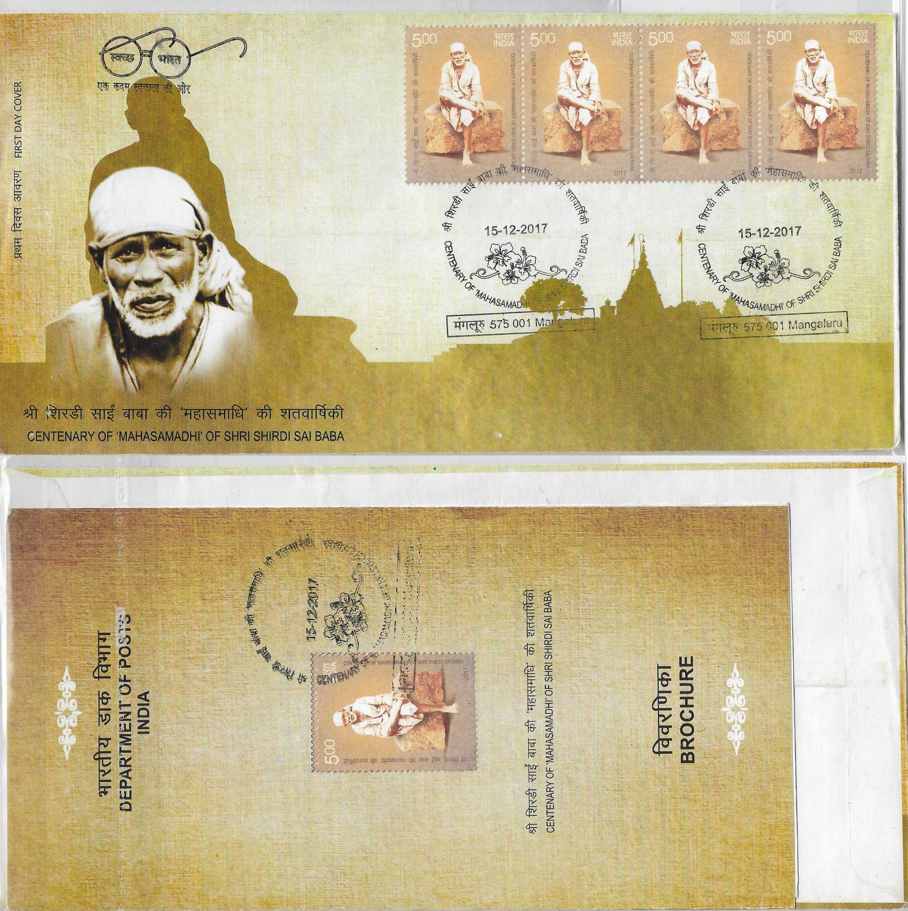 |
| 249 | First Day Cover | India-Viet Nam Joint Issue: Ancient Architecture | 25.01.2018 | Pune | Maharashtra | 411001 | |
| 250 | First Day Cover | Combo: India-Vietnam Joint Issue: Ancient Architecture & 50 Years od Diplomatic Relations Between India and Vietnam | 25.01.2018 | Bengaluru | Karnataka | 560001 | |
| 251 | First Day Cover | Auroville International Township Golden Jubilee 1968-2018 | 25.02.2018 | Bengaluru | Karnataka | 560001 |  |
| 252 | First Day Cover | Biju Patnaik | 05.03.2018 | New Delhi | Delhi | 110001 |  |
| 253 | First Day Cover | The Solar System | 20.03.2018 | Cuttack | Odisha | 753001 | |
| 254 | Blank First Day Cover | The Solar System | 20.03.2018 | none | none | none | |
| 255 | First Day Cover | Defence Research and Development Organisation | 11.04.2018 | New Delhi | Delhi | 110001 |  |
| 256 | First Day Cover | Goan Tiatr 125th Anniversary | 17.04.2018 | New Delhi | Delhi | 110001 |  |
| 257 | First Day Cover | M. L. Vasanthakumari | 03.07.2018 | Bengaluru | Karnataka | 560001 | |
| 258 | First Day Cover | Holiday Destinations in India | 15.08.2018 | Bengaluru | Karnataka | 560001 | |
| 259 | First Day Cover | Sant Ganinath | 23.09.2018 | Bengaluru | Karnataka | 560001 | |
| 260 | First Day Cover | Ustaad Sabri Khan | 13.12.2018 | Bengaluru | Karnataka | 560001 | |
| 261 | First Day Cover | Gulabrao Maharaj | 19.12.2018 | Bengaluru | Karnataka | 560001 |  |
| 262 | First Day Cover | Mahamati Prannath | 25.01.2019 | Bengaluru | Karnataka | 560001 | |
| 263 | First Day Cover | Kumbh Mela, Prayagraj | 02.02.2019 | Bengaluru | Karnataka | 560001 | |
| 264 | First Day Cover | Vedanta Desikan | 02.05.2019 | Bengaluru | Karnataka | 560001 | |
| 265 | First Day Cover | Rao Jaimal Rathore | 17.09.2021 | Hyderabad | Telangana | 500001 | |
| 266 | First Day Cover | The Samaja 1919-2019 | 06.10.2019 | Bengaluru | Karnataka | 560001 | |
| 267 | First Day Cover | Siachen Glacier 1 | 25.10.2019 | Bengaluru | Karnataka | 560001 | |
| 268 | First Day Cover | Siachen Glacier 2 | 25.10.2019 | Bengaluru | Karnataka | 560001 | |
| 269 | First Day Cover | Combo: Children's Day: Child Rights | 14.11.2019 | Bengaluru | Karnataka | 560001 | |
| 270 | First Day Cover | Terracota Temples of India | 08.08.2020 | Mangaluru | Karnataka | 575001 | |
| 271 | First Day Cover | 150th Birth Anniversary of Mahatma Gandhi | 02.10.2020 | Raipur | Chhattisgarh | 492001 | 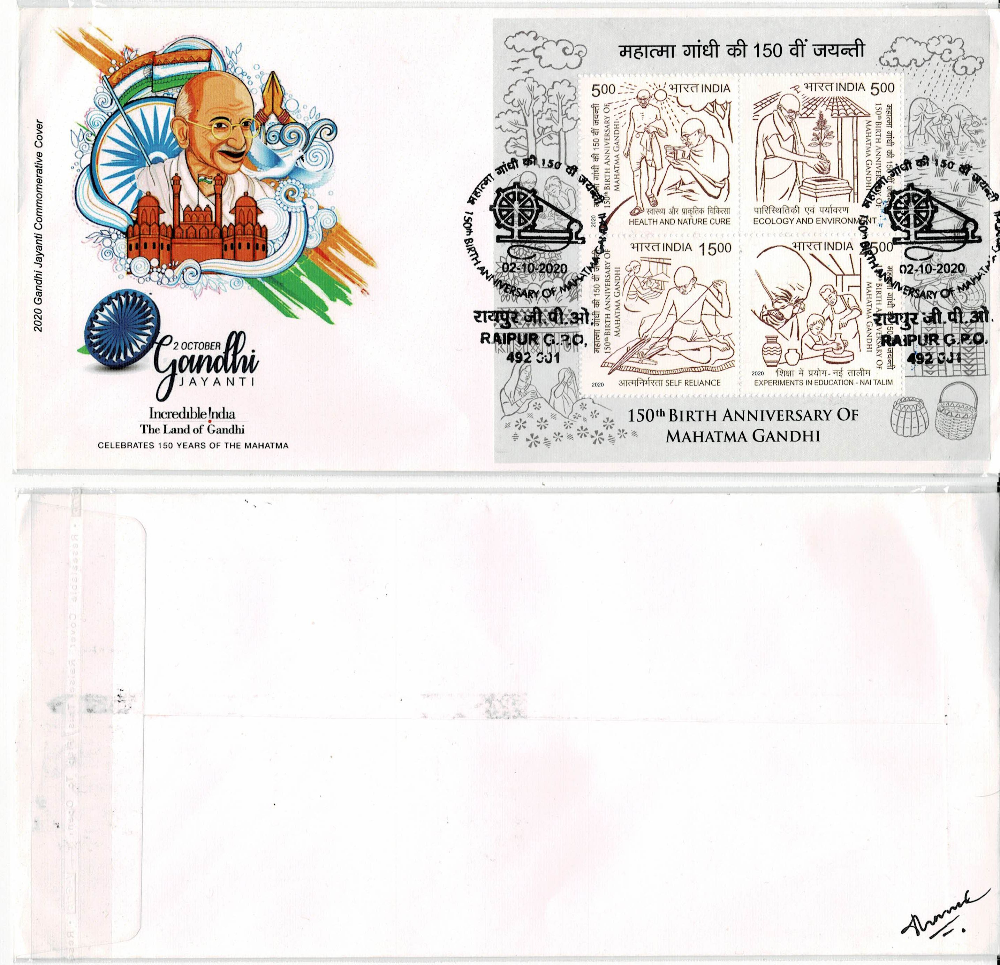 |
| 272 | First Day Cover | 125th Birth Anniversary of Netaji Subhas Chandra Bose | 23.01.2021 | Bengaluru | Karnataka | 560001 |  |
| 273 | First Day Cover | Rajyogini Dadi Janki | 12.04.2021 | Bengaluru | Karnataka | 560001 | |
| 274 | First Day Cover | 70 Years of Diplomatic Relations Between India and Germany | 10.06.2021 | Mysuru | Karnataka | 570001 | |
| 275 | First Day Cover | Ma. Chaman Lal | 07.08.2021 | Hyderabad | Telangana | 500001 | |
| 276 | First Day Cover | Dr. M. S. Aney | 29.08.2021 | New Delhi | Delhi | 110001 |  |
| 277 | First Day Cover | Four Martyrs of Solapur | 02.10.2021 | New Delhi | Delhi | 110001 |  |
| 278 | First Day Cover | Deccan College Bicentenary | 06.10.2021 | Hyderabad | Telangana | 500001 | |
| 279 | First Day Cover | S. C. B. Medical College & Hospital, Cuttack | 27.11.2021 | Bengaluru | Karnataka | 560001 | |
| 280 | First Day Cover | 75 Years of Mahindra Group | 01.12.2021 | Hyderabad | Telangana | 500001 | |
| 281 | First Day Cover | Swarnim Vijay Varsh | 16.12.2021 | New Delhi | Delhi | 110001 |  |
| 282 | First Day Cover | Combo: Srinivasa Ramanujan | 26.12.2021 | New Delhi | Delhi | 110001 |  |
| 283 | First Day Cover | Srinivasa Ramanujan | 26.12.2021 | New Delhi | Delhi | 110001 |  |
| 284 | First Day Cover | Department of Health Research | 16.01.2022 | New Delhi | Delhi | 110001 |  |
| 285 | First Day Cover | 50 Years of Full Statehood of Manipur | 21.01.2022 | Hyderabad | Telangana | 500001 |  |
| 286 | First Day Cover | 50 Years of Full Statehood of Meghalaya | 21.01.2022 | Hyderabad | Telangana | 500001 | |
| 287 | First Day Cover | 50 Years of Full Statehood of Tripura | 21.01.2022 | Hyderabad | Telangana | 500001 | |
| 288 | First Day Cover | 50th Anniversary of ICRISAT | 05.02.2022 | Hyderabad | Telangana | 500001 | |
| 289 | First Day Cover | Delhi Police-Platinum Jubilee | 16.02.2022 | New Delhi | Delhi | 110001 |  |
| 290 | First Day Cover | Pandurang Vaman Kane | 18.04.2022 | New Delhi | Delhi | 110001 |  |
| 291 | First Day Cover | 400th Year Gurudwara, Guru Ka Mahal, Sri Amritsar Prakash GuruParab Sri Guru Tegh Bahadur Sahib Ji | 21.04.2022 | Bengaluru | Karnataka | 560001 | |
| 292 | First Day Cover | University of Delhi Centenary Year | 01.05.2022 | Hyderabad | Telangana | 500001 | |
| 293 | First Day Cover | Karpatri Maharaj | 29.06.2022 | New Delhi | Delhi | 110001 |  |
| 294 | First Day Cover | 44th FIDE Chess Olympiad Chennai 2022 | 20.07.2022 | New Delhi | Delhi | 110001 |  |
| 295 | First Day Cover | Sant Tukaram | 10.08.2022 | Coimbatore | Tamil Nadu | 641001 | |
| 296 | First Day Cover | Ondiveeran | 20.08.2022 | Hyderabad | Telangana | 500001 | |
| 297 | First Day Cover | 2nd International Tiger Forum | 01.09.2022 | Hyderabad | Telangana | 500001 | |
| 298 | First Day Cover | Sawai Gandharva | 11.10.2022 | Hyderabad | Telangana | 500001 | |
| 299 | First Day Cover | 150th Birth Anniversary of Vijay Vallabh Surishwer | 26.12.2022 | New Delhi | Delhi | 110001 |  |
| 300 | First Day Cover | 125 Years of Sardar School Jodhpur | 13.11.2022 | New Delhi | Delhi | 110001 |  |
| 301 | First Day Cover | 175 Years of IIT Roorkee | 25.11.2022 | New Delhi | Delhi | 110001 |  |
| 302 | First Day Cover | Pa Togan Nengminza Sangma | 12.12.2022 | New Delhi | Delhi | 110001 |  |
| 303 | First Day Cover | Azadi Ka Amrit Mahotsav | 11.02.2023 | New Delhi | Delhi | 110001 |  |
| 304 | First Day Cover | Azadi Ka Amrit Mahotsav | 11.02.2023 | Bengaluru | Karnataka | 560001 | |
| 305 | First Day Cover | International Year of Millets | 18.03.2023 | Bengaluru | Karnataka | 560001 | |
| 306 | First Day Cover | Parshuram 1 | 19.03.2023 | Bengaluru | Karnataka | 560001 | |
| 307 | First Day Cover | Parshuram 2 | 19.03.2023 | Bengaluru | Karnataka | 560001 | |
| 308 | First Day Cover | Diamond Jubilee of CBI | 03.04.2023 | Pondicherry | Puducherry | 605001 | |
| 309 | First Day Cover | Gauhati High Court Platinum Jubilee | 05.04.2023 | Pondicherry | Puducherry | 605001 | |
| 310 | First Day Cover | Dayanand Saraswati 1 | 07.04.2023 | Bengaluru | Karnataka | 560001 | |
| 311 | First Day Cover | Dayanand Saraswati 2 | 07.04.2023 | Bengaluru | Karnataka | 560001 | |
| 312 | First Day Cover | 75th Year of Indian Army Day | 19.04.2023 | Bengaluru | Karnataka | 560001 | |
| 313 | First Day Cover | Mann Ki Baat | 26.04.2023 | Bengaluru | Karnataka | 560001 | |
| 314 | Travelled First Day Cover | Parliament Complex | 28.05.2023 | New Delhi | Delhi | 110001 |  |
| 315 | First Day Cover | Raj Bhavan, Uttar Pradesh | 20.06.2023 | Pondicherry | Puducherry | 605001 | |
| 316 | Blank First Day Cover | Sardar Antaji Mankeshwar Gandhe | 04.07.2023 | Mumbai | Maharashtra | 400001 | 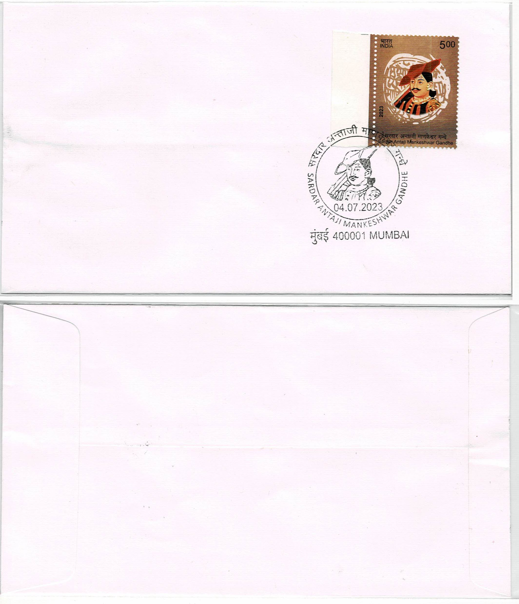 |
| 317 | First Day Cover | Sardar Antaji Mankeshwar Gandhe | 04.07.2023 | Bengaluru | Karnataka | 560001 | |
| 318 | First Day Cover | Sardar Antaji Mankeshwar Gandhe | 04.07.2023 | Pondicherry | Puducherry | 605001 | |
| 319 | First Day Cover | G20 Leaders' Summit, New Delhi, 2023 (A) | 09.09.2023 | Bengaluru | Karnataka | 560001 | |
| 320 | First Day Cover | G20 Leaders' Summit, New Delhi, 2023 (B) | 09.09.2023 | Bengaluru | Karnataka | 560001 | |
| 321 | First Day Cover | Dada J P Vaswani | 12.09.2023 | Bengaluru | Karnataka | 560001 | |
| 322 | First Day Cover | 500th Birth Anniversary of Rani Durgavati | 05.10.2023 | Bengaluru | Karnataka | 560001 | |
| 323 | First Day Cover | Hemachandra Vikramaditya | 07.10.2023 | Bengaluru | Karnataka | 560001 | |
| 324 | Travelled First Day Cover | Combo: Children's Day: Child Rights and Children's Day | 14.11.2023 | Aurangabad | Maharashtra | 431001 | |
| 325 | First Day Cover | 525th Birth Anniversary of Saint Meera Bai 1 | 23.11.2023 | Bengaluru | Karnataka | 560001 | |
| 326 | First Day Cover | 525th Birth Anniversary of Saint Meera Bai 2 | 23.11.2023 | Bengaluru | Karnataka | 560001 | |
| 327 | First Day Cover | Rani Abbakka Devi | 15.12.2023 | Bengaluru | Karnataka | 560001 | |
{kind=link}
{kind=link}
{kind=link}
{kind=link}
{kind=link}
{kind=link}
{kind=link}
{kind=link}
{kind=link}
{kind=link}
{kind=link}
{kind=link}
{kind=link}
{kind=link}
{kind=link}
{kind=link}
{kind=link}
{kind=link}
{kind=link}
{kind=link}
{kind=link}
{kind=link}
{kind=link}
{kind=link}
{kind=link}
{kind=link}
{kind=link}
{kind=link}
{kind=link}
{kind=link}
{kind=link}
{kind=link}
{kind=link}
{kind=link}
{kind=link}
{kind=link}
{kind=link}
{kind=link}
{kind=link}
{kind=link}
{kind=link}
{kind=link}
{kind=link}
{kind=link}
{kind=link}
{kind=link}
{kind=link}
{kind=link}
{kind=link}
{kind=link}
{kind=link}
{kind=link}
{kind=link}
{kind=link}
{kind=link}
{kind=link}
{kind=link}
{kind=link}
{kind=link}
{kind=link}
{kind=link}
{kind=link}
{kind=link}
{kind=link}
{kind=link}
{kind=link}
{kind=link}
{kind=link}
{kind=link}
{kind=link}
{kind=link}
{kind=link}
{kind=link}
{kind=link}
{kind=link}
{kind=link}
{kind=link}
{kind=link}
{kind=link}
{kind=link}
{kind=link}
{kind=link}
{kind=link}
{kind=link}
{kind=link}
{kind=link}
{kind=link}
{kind=link}
{kind=link}
{kind=link}
{kind=link}
{kind=link}
{kind=link}
{kind=link}
{kind=link}
{kind=link}
{kind=link}
{kind=link}
{kind=link}
{kind=link}
{kind=link}
{kind=link}
{kind=link}
{kind=link}
{kind=link}
{kind=link}
{kind=link}
{kind=link}
{kind=link}
{kind=link}
{kind=link}
{kind=link}
{kind=link}
{kind=link}
{kind=link}
{kind=link}
{kind=link}
{kind=link}
{kind=link}
{kind=link}
{kind=link}
{kind=link}
{kind=link}
{kind=link}
{kind=link}
{kind=link}
{kind=link}
{kind=link}
{kind=link}
{kind=link}
{kind=link}
{kind=link}
{kind=link}
{kind=link}
{kind=link}
{kind=link}
{kind=link}
{kind=link}
{kind=link}
{kind=link}
{kind=link}
{kind=link}
{kind=link}
{kind=link}
{kind=link}
{kind=link}
{kind=link}
{kind=link}
{kind=link}
{kind=link}
{kind=link}
{kind=link}
{kind=link}
{kind=link}
{kind=link}
{kind=link}
{kind=link}
{kind=link}
{kind=link}
{kind=link}
{kind=link}
{kind=link}
{kind=link}
{kind=link}
{kind=link}
{kind=link}
{kind=link}
{kind=link}
{kind=link}
{kind=link}
{kind=link}
{kind=link}
{kind=link}
{kind=link}
{kind=link}
{kind=link}
{kind=link}
{kind=link}
{kind=link}
{kind=link}
{kind=link}